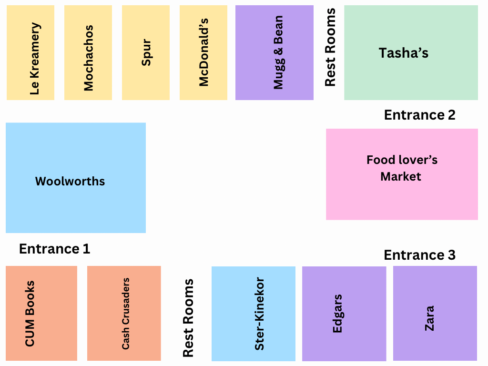

Pine City Mall Layout Map
Welcome to Pine City Mall! Below is the layout of our mall, showing the locations of our stores, restaurants, and restrooms.
Entrance 1 (Main Entrance)
As you enter from Entrance 1, you will find the following:
- CUM Books - A wide selection of books and gifts.
- Cash Crusaders - Second-hand goods at amazing prices.
- Ster-Kinekor - Catch the latest blockbuster movies and enjoy an immersive cinematic experience.
- Restrooms - Conveniently located between Cash Crusaders and Ster-Kinekor for easy access.
- Woolworths - Quality groceries and homeware, located near the center of Entrance 1.
Entrance 2
As you enter from Entrance 2, you will encounter the following:
- Food Lovers Market - Fresh produce and quality goods.
- Food Court:
- Tasha's - Elegant dining for the perfect meal, right as you enter the food court.
- Restrooms - Located between Tasha's and Mugg & Bean for your convenience.
- Mugg & Bean - Freshly brewed coffee and hearty meals.
- McDonald's - Classic fast food favorites, located right next to Mugg & Bean.
- Spur - Enjoy a fun, family-friendly meal, next to McDonald's.
- Mochachos - Bold, flame-grilled flavors await you, located next to Spur.
- Le Kreamery - Delicious ice cream and desserts, at the end of the food court.
Entrance 3
As you enter from Entrance 3, you will find:
- Zara - Shop the latest fashion trends.
- Edgars - Your fashion and beauty destination.
Restrooms Locations
Restroom facilities are located in the following areas:
- Male Restrooms - Located near the main entrance.
- Female Restrooms - Located near the food court, next to Tasha's.
- Paraplegic Restrooms - Accessible restrooms are located near elevators and parking lots for ease of access.
Map Preview
Below is a simplified representation of the Pine City Mall's layout, showing where each store, restaurant, and restroom is located. You can refer to the list above for more detailed descriptions of each area:
If you'd like more detailed directions or wish to explore specific areas, please check out the interactive map at the entrance or ask any of our helpful staff for assistance.